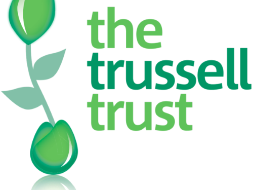
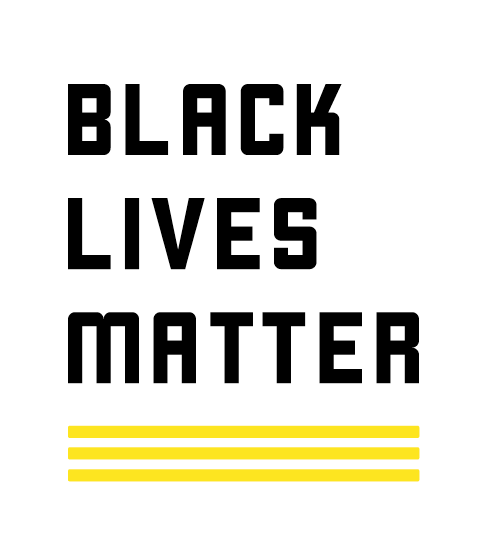
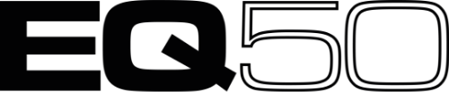

The Trussell Trust
Trussell Trust apoya una red nacional de bancos de alimentos y juntos brindamos alimentos de emergencia y apoyo a las personas atrapadas en la pobreza, y hacemos campaña por el cambio para terminar con la necesidad de bancos de alimentos en el Reino Unido.
Recolectamos donaciones de alimentos para Trussell Trust en algunos de nuestros eventos. Para encontrar la próxima fecha de recolección, esté atento a nuestro Facebook o página de eventos.

TRUSSELLTRUST.ORG
Black Lives Matter
Black Lives Matter es una organización global en los EE. UU., el Reino Unido y Canadá, cuya misión es erradicar la supremacía blanca y generar poder local para intervenir en la violencia infligida a las comunidades negras por parte del estado y los vigilantes.

BLACKLIVESMATTER.COM
EQ50
EQ50 es un grupo de mujeres que trabajan para lograr una representación adecuada dentro del drum and bass. La iniciativa se lanzó en diciembre de 2018 como respuesta a la desigualdad de género dentro del drum and bas

EQ50.CO.UK